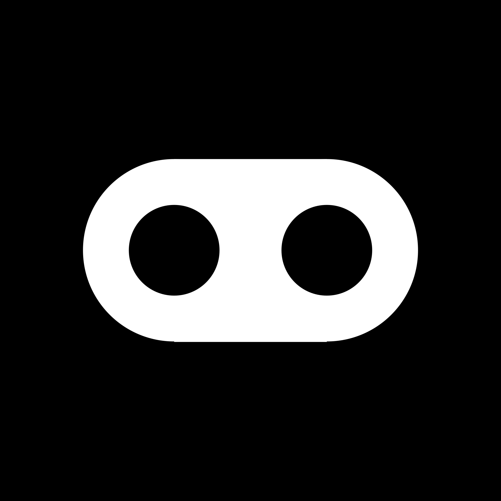

Moonshot is a community of students at GEC Palakkad who are highly passionate about learning, building things, solving problems, growing together and making the best of the finite time they have on this planet. Moonshot members help each other with building a strong foundation for their early tech career, discovering (and keep discovering!) what's most interesting to them, getting awesome opportunities and finding interesting real-world problems to solve, resume reviews, improving soft skills and netiquette, mock interviews, growing as leaders, cultivating a fun and professional network, getting started with an open source community, finding the best resources, gaining real-world software engineering experience, building challenging projects and impactful products, and most importantly, becoming the best version of themselves.
People
Sreelakshmi Jayarajan | Co-founder & President
Sreelakshmi is currently a B.Tech IT (S4) student at GEC Palakkad. These days she's working on a project related to automating atmospheric research flight planning at Mission Support System as a Google Summer of Code '22 developer. Previously, she was a contributor to SerenityOS.
Get in touch:
Email |
LinkedIn |
Twitter |
GitHub
Anand Baburajan | Co-founder & Vice President
Anand is a B.Tech CSE '21 graduate from GEC Palakkad. These days he's learning computer science and building Kukkee — a tool used by hundreds of people and with 200+ stars on GitHub. Previously, he was a software engineer intern at HackerRank, a Google Summer of Code '20 developer at LiberTEM, and he launched and led FOSS OpenHack '20 — a program which helped 25+ students with building 10+ open source projects and contributing to 5+ major open source projects.
Get in touch:
Email |
LinkedIn |
Twitter |
GitHub
Principles
- Care about your work, about other members, and about yourself. Don't stand by while another member struggles. Best results come when we work together effectively. We succeed only if we help each other succeed.
- Work at the edge of your abilities. Be ambitious about what you can achieve and also honest about your capacity, choosing work that challenges you but isn't so far beyond your current abilities that it's discouraging. This is where the most learning and growth happens. Dare mighty things! Perseverance is your friend.
- Be empathetic. EQ is as important, if not more important, than IQ. Importantly, EQ includes self-empathy.
- Have substance. Make claims and have strong opinions, but back them up with strong evidence.
- Build your volitional muscles. Grow your ability to make decisions about your work and learning based on your own curiosity and joy, rather than external pressures and fears. This enables you to discover what you deeply care about, independent of what society, your family, or financial necessity might pressure you to do.
- Question. Don't go straight for the answer. The art of success is in asking good questions. A well-posed question may unveil a simpler solution.
- Be humble. Arrogance is blinding. Humility is key to solving problems with unexpected solutions.
- Learn generously. That's what makes Moonshot a community. We celebrate each other's successes, support each other when we struggle, and benefit from each other's knowledge. Learning generously takes many forms. It means sharing your curiosities, interests, and struggles with others; being open to collaboration; and listening well and asking good questions when others share their work with you. If you're very social and enjoy variety, it might mean hosting events or pairing on other people's projects. If you're afraid you can't learn generously because you have less experience, don't be. Even if some people know more than you about specific topics, your enthusiasm and excitement for what you're learning might be exactly what inspires someone else to push through a slump. Learning generously works best if everyone does it. When we do, we all get out more than we put in.
- Be responsible individually and as a community. To the world and to ourselves.
- Have courageous conversations. Be brave. Give each other honest feedback when there is a problem. These conversations diversify thinking and enhance empathy.
- Disagree and commit. Consensus is cozy, but broad agreement is not our aim. The right decision is. Which is why we take the time to think, debate, persuade, listen and reconsider and then, someone, decides. If you disagree, that's fine, but once the decision is made, it's time to commit and support it completely.
- Know no. "No" is no to one thing. "Yes" is no to a lot of things.
Join us
You'll get to learn a lot, build and work on interesting things, build meaningful relationships, have a transformative experience, and help those around you do the same. Don't believe us? Check out the OpenHack '20 wall of love to know what ex-OpenHack members have to say!
Moonshot is not accepting applications at the moment.
Get in touch
Email |
LinkedIn |
Twitter |
GitHub
